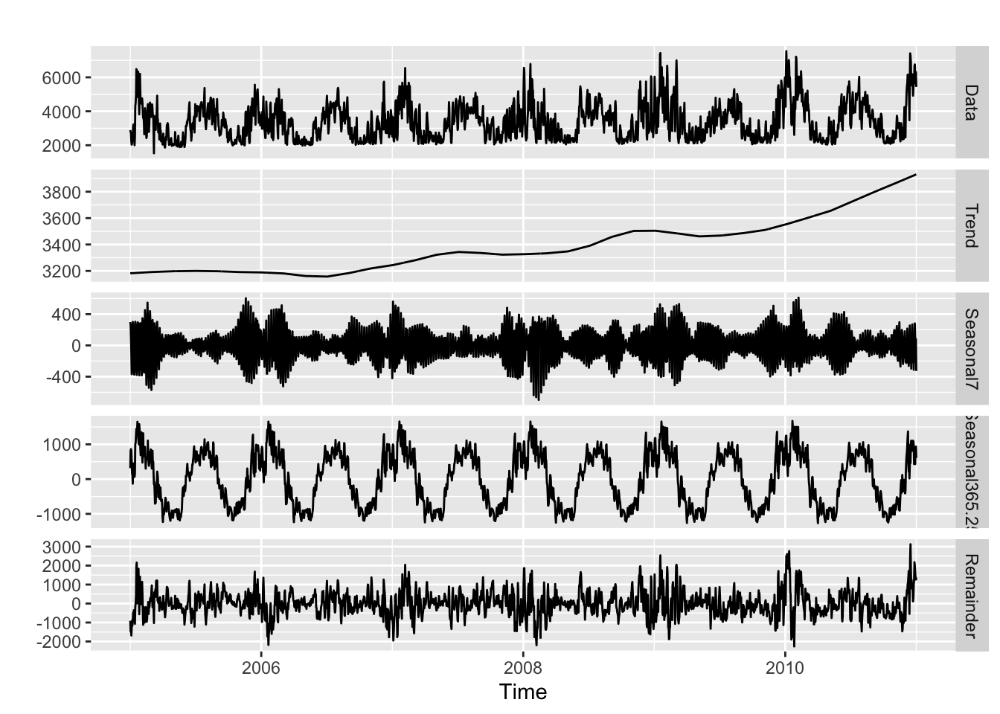
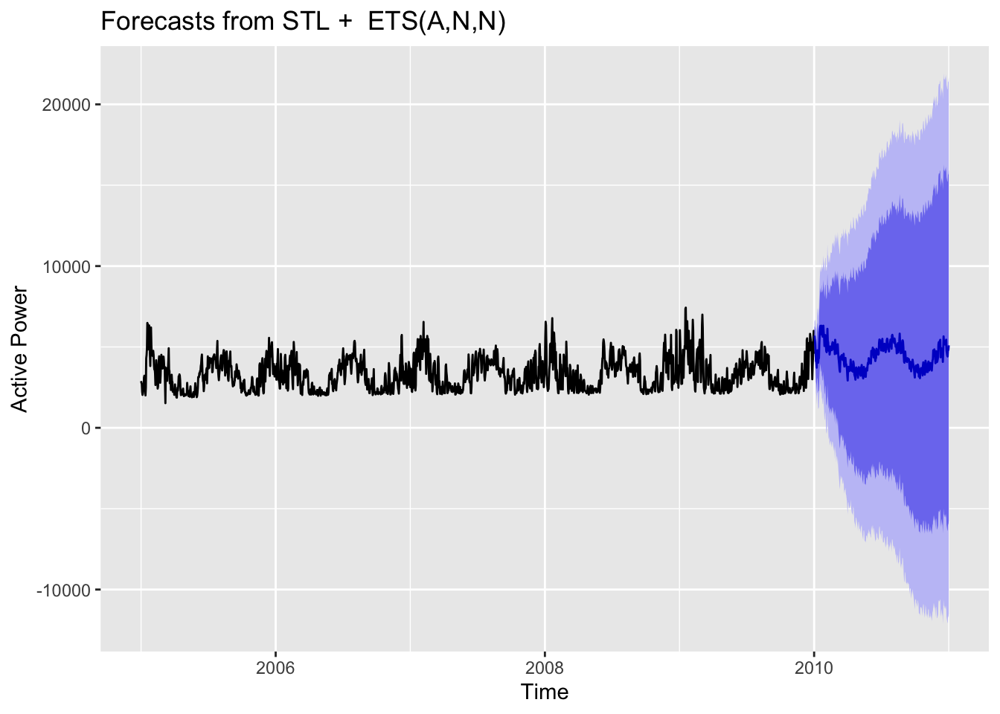
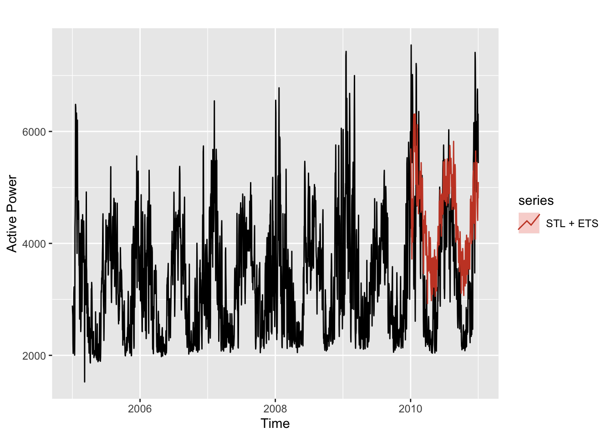
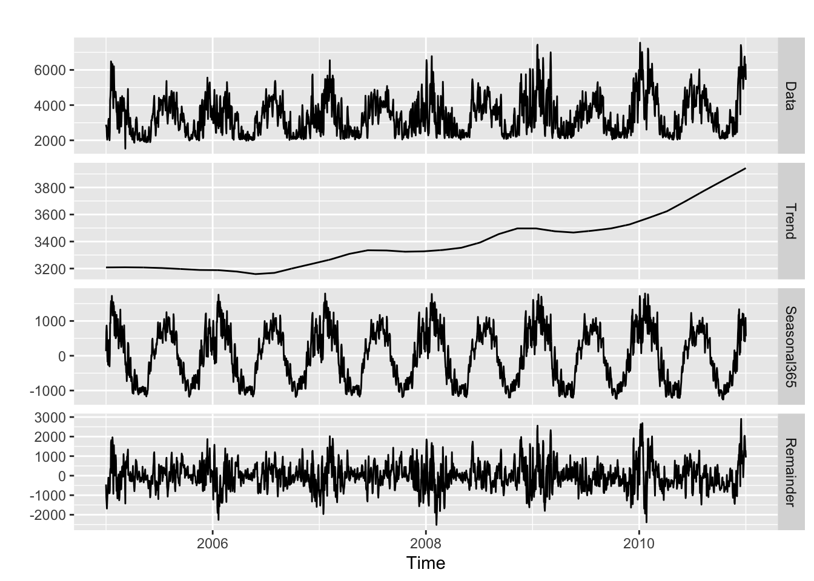
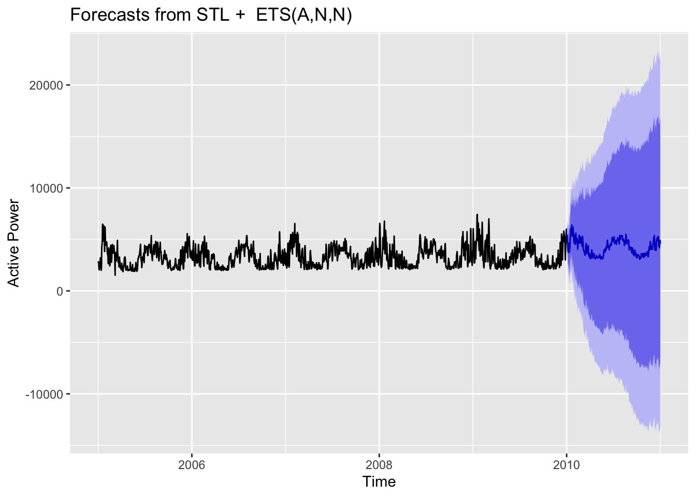
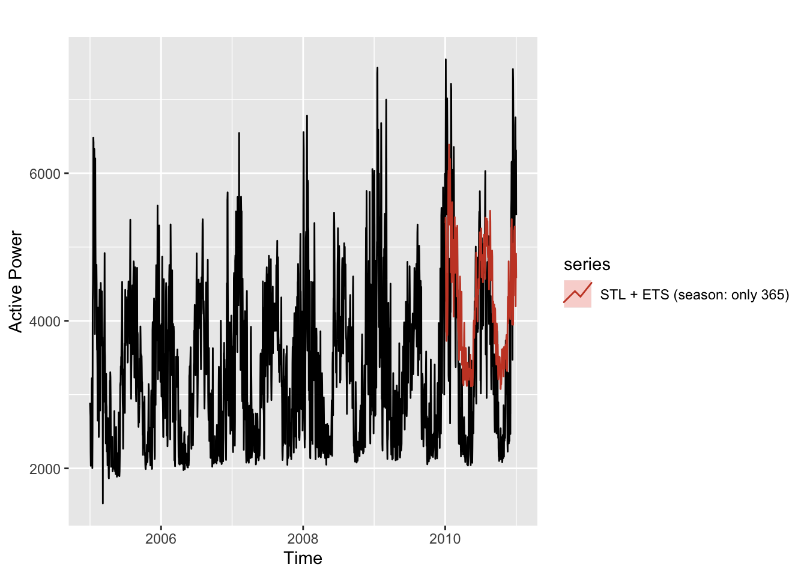
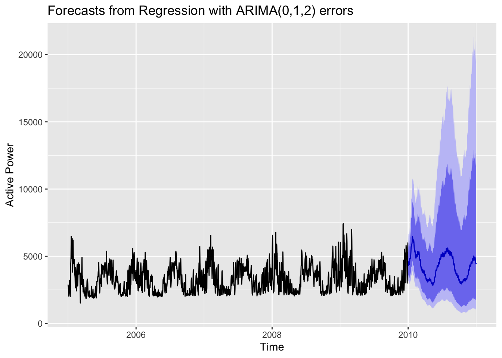
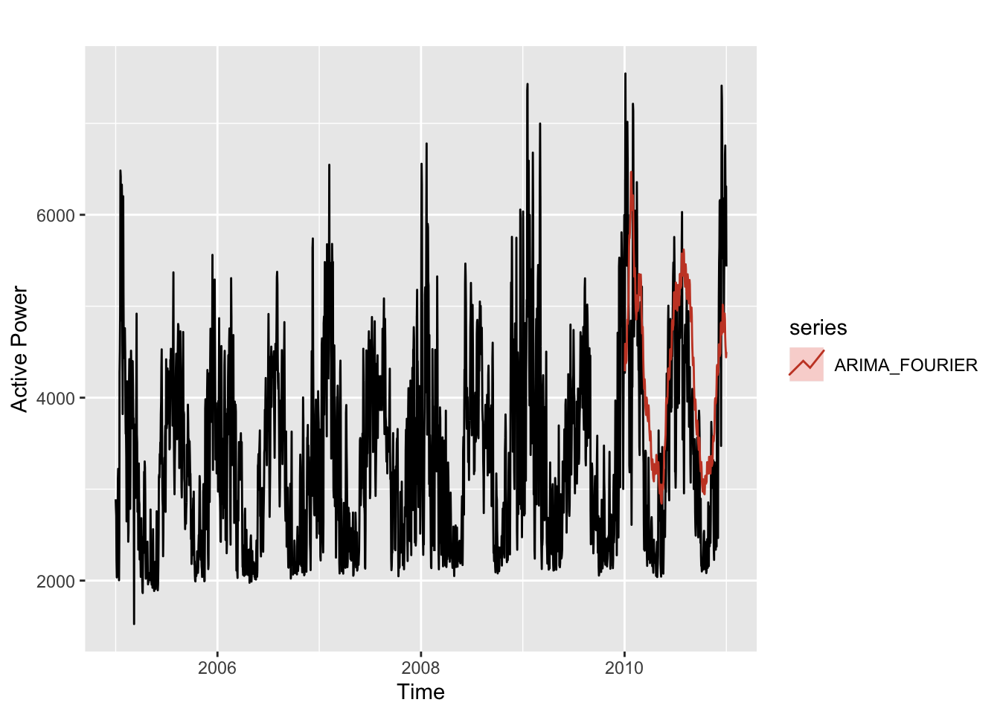

First Model
Library necessary packages
load three datasets into R
Process load dataset
meter_id date h1 h2
Length:2191 Min. :2005-01-01 00:00:00 Min. : 0 Min. :1395
Class :character 1st Qu.:2006-07-02 12:00:00 1st Qu.:1960 1st Qu.:1827
Mode :character Median :2008-01-01 00:00:00 Median :2577 Median :2408
Mean :2008-01-01 00:00:00 Mean :2838 Mean :2724
3rd Qu.:2009-07-01 12:00:00 3rd Qu.:3384 3rd Qu.:3239
Max. :2010-12-31 00:00:00 Max. :7553 Max. :7749
NA's :6
h3 h4 h5 h6 h7
Min. :1333 Min. :1333 Min. :1380 Min. :1442 Min. : 861
1st Qu.:1768 1st Qu.:1736 1st Qu.:1757 1st Qu.:1897 1st Qu.:2163
Median :2324 Median :2282 Median :2282 Median :2401 Median :2646
Mean :2684 Mean :2682 Mean :2741 Mean :2921 Mean :3243
3rd Qu.:3166 3rd Qu.:3132 3rd Qu.:3206 3rd Qu.:3412 3rd Qu.:3840
Max. :8162 Max. :8561 Max. :8967 Max. :9317 Max. :9849
h8 h9 h10 h11 h12
Min. : 0 Min. : 0 Min. : 0 Min. : 0 Min. :1758
1st Qu.:2310 1st Qu.:2436 1st Qu.:2485 1st Qu.:2440 1st Qu.:2387
Median :2842 Median :3038 Median :3157 Median :3206 Median :3150
Mean :3424 Mean :3451 Mean :3401 Mean :3358 Mean :3372
3rd Qu.:4046 3rd Qu.:3983 3rd Qu.:4025 3rd Qu.:4088 3rd Qu.:4172
Max. :9982 Max. :9562 Max. :8652 Max. :7868 Max. :7399
h13 h14 h15 h16 h17
Min. : 0 Min. : 0 Min. : 0 Min. : 0 Min. : 0
1st Qu.:2352 1st Qu.:2296 1st Qu.:2282 1st Qu.:2324 1st Qu.:2502
Median :3094 Median :3003 Median :2972 Median :3059 Median :3318
Mean :3416 Mean :3440 Mean :3476 Mean :3565 Mean :3753
3rd Qu.:4302 3rd Qu.:4412 3rd Qu.:4501 3rd Qu.:4620 3rd Qu.:4851
Max. :7532 Max. :7644 Max. :7735 Max. :8008 Max. :8120
h18 h19 h20 h21 h22
Min. : 0 Min. : 0 Min. : 0 Min. : 0 Min. : 329
1st Qu.:2823 1st Qu.:3014 1st Qu.:3061 1st Qu.:3038 1st Qu.:2842
Median :3759 Median :3932 Median :3899 Median :3829 Median :3633
Mean :4033 Mean :4141 Mean :4088 Mean :4026 Mean :3822
3rd Qu.:5124 3rd Qu.:5082 3rd Qu.:4890 3rd Qu.:4722 3rd Qu.:4515
Max. :8246 Max. :8218 Max. :8197 Max. :8162 Max. :7924
h23 h24
Min. :1498 Min. : 14
1st Qu.:2555 1st Qu.:2212
Median :3271 Median :2898
Mean :3470 Mean :3097
3rd Qu.:4109 3rd Qu.:3688
Max. :7819 Max. :7343
date load_avg
Min. :2005-01-01 00:00:00 Min. :1525
1st Qu.:2006-07-02 12:00:00 1st Qu.:2453
Median :2008-01-01 00:00:00 Median :3220
Mean :2008-01-01 00:00:00 Mean :3382
3rd Qu.:2009-07-01 12:00:00 3rd Qu.:4046
Max. :2010-12-31 00:00:00 Max. :7545 Process the humidity data
date hr rh_ws1
Min. :2005-01-01 00:00:00.00 Min. : 1.0 Min. : 7.00
1st Qu.:2006-07-02 00:00:00.00 1st Qu.: 7.0 1st Qu.: 51.00
Median :2008-01-01 00:00:00.00 Median :13.0 Median : 73.00
Mean :2008-01-01 00:17:23.48 Mean :12.5 Mean : 69.42
3rd Qu.:2009-07-02 00:00:00.00 3rd Qu.:19.0 3rd Qu.: 90.00
Max. :2010-12-31 00:00:00.00 Max. :24.0 Max. :100.00
rh_ws2 rh_ws3 rh_ws4 rh_ws5
Min. : 1.00 Min. : 8.00 Min. : 9.00 Min. : 6.00
1st Qu.: 53.00 1st Qu.: 54.00 1st Qu.: 48.00 1st Qu.: 54.00
Median : 74.00 Median : 74.00 Median : 66.00 Median : 76.00
Mean : 67.83 Mean : 70.01 Mean : 64.64 Mean : 70.81
3rd Qu.: 87.00 3rd Qu.: 89.00 3rd Qu.: 84.00 3rd Qu.: 89.00
Max. :100.00 Max. :100.00 Max. :100.00 Max. :100.00
rh_ws6 rh_ws7 rh_ws8 rh_ws9
Min. : 15.00 Min. : 13.00 Min. : 3.00 Min. : 1.00
1st Qu.: 58.00 1st Qu.: 59.00 1st Qu.: 52.00 1st Qu.: 52.00
Median : 73.00 Median : 78.00 Median : 73.00 Median : 69.00
Mean : 70.77 Mean : 73.05 Mean : 69.04 Mean : 66.92
3rd Qu.: 86.00 3rd Qu.: 90.00 3rd Qu.: 88.00 3rd Qu.: 83.00
Max. :100.00 Max. :100.00 Max. :100.00 Max. :100.00
rh_ws10 rh_ws11 rh_ws12 rh_ws13
Min. : 5.00 Min. : 9.00 Min. : 6.00 Min. : 1.00
1st Qu.: 53.00 1st Qu.: 47.00 1st Qu.: 46.00 1st Qu.: 49.00
Median : 74.00 Median : 63.00 Median : 64.00 Median : 69.00
Mean : 70.96 Mean : 63.21 Mean : 63.25 Mean : 66.24
3rd Qu.: 92.00 3rd Qu.: 81.00 3rd Qu.: 82.00 3rd Qu.: 84.00
Max. :100.00 Max. :100.00 Max. :100.00 Max. :100.00
rh_ws14 rh_ws15 rh_ws16 rh_ws17
Min. : 8.00 Min. : 10.00 Min. : 18.00 Min. : 9.00
1st Qu.: 49.00 1st Qu.: 50.00 1st Qu.: 66.00 1st Qu.: 48.00
Median : 66.00 Median : 70.00 Median : 78.00 Median : 67.00
Mean : 65.04 Mean : 68.48 Mean : 75.68 Mean : 65.27
3rd Qu.: 84.00 3rd Qu.: 88.00 3rd Qu.: 88.00 3rd Qu.: 84.00
Max. :100.00 Max. :100.00 Max. :100.00 Max. :100.00
rh_ws18 rh_ws19 rh_ws20 rh_ws21
Min. : 10.00 Min. : 0.00 Min. : 11.0 Min. : 1.00
1st Qu.: 58.00 1st Qu.: 50.00 1st Qu.: 65.0 1st Qu.: 49.00
Median : 75.00 Median : 74.00 Median : 77.0 Median : 69.00
Mean : 70.92 Mean : 68.75 Mean : 74.1 Mean : 66.84
3rd Qu.: 87.00 3rd Qu.: 90.00 3rd Qu.: 87.0 3rd Qu.: 88.00
Max. :100.00 Max. :100.00 Max. :100.0 Max. :100.00
rh_ws22 rh_ws23 rh_ws24 rh_ws25
Min. : 1.00 Min. : 9.00 Min. : 14.0 Min. : 8.00
1st Qu.: 47.00 1st Qu.: 60.00 1st Qu.: 55.0 1st Qu.: 50.00
Median : 66.00 Median : 79.00 Median : 70.0 Median : 70.00
Mean : 63.85 Mean : 73.97 Mean : 69.1 Mean : 67.61
3rd Qu.: 83.00 3rd Qu.: 91.00 3rd Qu.: 85.0 3rd Qu.: 87.00
Max. :100.00 Max. :100.00 Max. :100.0 Max. :100.00
rh_ws26 rh_ws27 rh_ws28
Min. : 11.00 Min. : 10.00 Min. : 12.00
1st Qu.: 53.00 1st Qu.: 48.00 1st Qu.: 53.00
Median : 75.00 Median : 67.00 Median : 74.00
Mean : 71.19 Mean : 65.25 Mean : 70.18
3rd Qu.: 92.00 3rd Qu.: 84.00 3rd Qu.: 90.00
Max. :100.00 Max. :100.00 Max. :100.00 humidity_day_avg date
Min. :29.43 Min. :2005-01-01 00:00:00
1st Qu.:61.21 1st Qu.:2006-07-02 12:00:00
Median :69.98 Median :2008-01-01 00:00:00
Mean :68.65 Mean :2008-01-01 00:00:00
3rd Qu.:77.18 3rd Qu.:2009-07-01 12:00:00
Max. :94.95 Max. :2010-12-31 00:00:00 Process the temperature data
date hr t_ws1
Min. :2005-01-01 00:00:00.00 Min. : 1.0 Min. : 9.00
1st Qu.:2006-07-02 00:00:00.00 1st Qu.: 7.0 1st Qu.: 47.00
Median :2008-01-01 00:00:00.00 Median :13.0 Median : 63.00
Mean :2008-01-01 00:17:23.48 Mean :12.5 Mean : 61.04
3rd Qu.:2009-07-02 00:00:00.00 3rd Qu.:19.0 3rd Qu.: 74.00
Max. :2010-12-31 00:00:00.00 Max. :24.0 Max. :104.00
t_ws2 t_ws3 t_ws4 t_ws5
Min. : 9.00 Min. : 4.00 Min. : 11.00 Min. : 17.00
1st Qu.: 48.00 1st Qu.:42.12 1st Qu.: 48.00 1st Qu.: 52.00
Median : 63.00 Median :57.00 Median : 63.00 Median : 64.00
Mean : 61.29 Mean :55.34 Mean : 61.02 Mean : 63.03
3rd Qu.: 75.00 3rd Qu.:68.00 3rd Qu.: 74.00 3rd Qu.: 75.00
Max. :104.00 Max. :93.00 Max. :103.00 Max. :102.00
t_ws6 t_ws7 t_ws8 t_ws9
Min. : 15.00 Min. : 15.00 Min. : 12.00 Min. : 0.00
1st Qu.: 48.00 1st Qu.: 50.00 1st Qu.: 50.00 1st Qu.:41.00
Median : 63.00 Median : 64.00 Median : 64.00 Median :55.00
Mean : 60.99 Mean : 62.03 Mean : 62.98 Mean :53.98
3rd Qu.: 74.00 3rd Qu.: 75.00 3rd Qu.: 75.00 3rd Qu.:66.00
Max. :100.00 Max. :100.00 Max. :104.00 Max. :93.00
t_ws10 t_ws11 t_ws12 t_ws13
Min. : 12.00 Min. : 11.00 Min. : 12.00 Min. : 9.00
1st Qu.: 49.00 1st Qu.: 46.00 1st Qu.: 49.00 1st Qu.: 48.00
Median : 64.00 Median : 61.00 Median : 63.00 Median : 63.00
Mean : 62.16 Mean : 59.82 Mean : 61.29 Mean : 60.92
3rd Qu.: 75.00 3rd Qu.: 73.00 3rd Qu.: 74.00 3rd Qu.: 73.00
Max. :104.00 Max. :100.00 Max. :105.00 Max. :102.00
t_ws14 t_ws15 t_ws16 t_ws17
Min. : 9.00 Min. : 5.00 Min. :21.00 Min. : 9.00
1st Qu.: 46.00 1st Qu.: 45.00 1st Qu.:52.00 1st Qu.: 47.00
Median : 61.00 Median : 61.00 Median :64.00 Median : 62.00
Mean : 59.15 Mean : 59.19 Mean :62.83 Mean : 60.14
3rd Qu.: 72.00 3rd Qu.: 73.00 3rd Qu.:76.00 3rd Qu.: 73.00
Max. :103.00 Max. :104.00 Max. :93.00 Max. :103.00
t_ws18 t_ws19 t_ws20 t_ws21
Min. :14.00 Min. : 9.0 Min. :17.00 Min. : 5.00
1st Qu.:52.00 1st Qu.: 46.0 1st Qu.:52.00 1st Qu.:45.00
Median :66.00 Median : 62.0 Median :65.00 Median :61.00
Mean :63.52 Mean : 59.8 Mean :63.34 Mean :58.13
3rd Qu.:76.00 3rd Qu.: 73.0 3rd Qu.:76.00 3rd Qu.:72.00
Max. :99.00 Max. :102.0 Max. :96.00 Max. :99.00
t_ws22 t_ws23 t_ws24 t_ws25
Min. : 7.00 Min. :12.00 Min. : 16.00 Min. : 9.00
1st Qu.: 45.00 1st Qu.:50.00 1st Qu.: 47.00 1st Qu.: 48.00
Median : 61.00 Median :65.00 Median : 62.00 Median : 64.00
Mean : 58.44 Mean :62.53 Mean : 60.78 Mean : 62.03
3rd Qu.: 72.00 3rd Qu.:75.00 3rd Qu.: 74.00 3rd Qu.: 75.00
Max. :100.00 Max. :99.00 Max. :104.00 Max. :102.00
t_ws26 t_ws27 t_ws28
Min. : 10.00 Min. : 11.00 Min. : 9.00
1st Qu.: 48.00 1st Qu.: 48.00 1st Qu.: 47.00
Median : 64.00 Median : 63.00 Median : 62.00
Mean : 61.94 Mean : 61.11 Mean : 60.21
3rd Qu.: 75.00 3rd Qu.: 75.00 3rd Qu.: 74.00
Max. :104.00 Max. :104.00 Max. :104.00 humidity_day_avg date
Min. :21.39 Min. :2005-01-01 00:00:00
1st Qu.:49.06 1st Qu.:2006-07-02 12:00:00
Median :62.17 Median :2008-01-01 00:00:00
Mean :60.68 Mean :2008-01-01 00:00:00
3rd Qu.:74.27 3rd Qu.:2009-07-01 12:00:00
Max. :87.09 Max. :2010-12-31 00:00:00 create a time series with all three data
For the first model, we’ll only be using the load data.

#Model 1: STL+ETS model Fit the model and check accuracy for further comparison


Produce the output
#Model 1.1: Try including just one seasonal period, i.e., 365.25 *Comment from Kassie: 1) I tried only 7, and it didn’t work very well, so I changed to only try 365.25 2) I followed Luana’s code to compare RMSE just for convenience, but we could change to other metrics later



ME RMSE MAE MPE MAPE
STL+ETS -664.6901 1230.409 1039.9913 -27.15953 33.22840
STL + ETS (season: only 365) -467.8164 1127.946 928.5512 -21.33494 28.99442
ACF1 Theil's U
STL+ETS 0.7996964 2.806851
STL + ETS (season: only 365) 0.8226449 2.460304The best model by RMSE is: STL + ETS (season: only 365)#Model 2: ARIMA + FOURIER terms Fit the model and check accuracy for further comparison


*Note from Kassie: I asked GPT-4 what does lambda part do, and here’s some helpful comment from it: 1) By setting lambda = 0, you are telling the auto.arima() function to use the log-transformed data when fitting the ARIMA model. 2) This can help stabilize the variance and make the model more accurate, especially when dealing with data that has a multiplicative seasonality or an increasing trend. Still, I’m unsure if it would be better for us to include that and if so, what shall be the value. Maybe try later for 2.x models!
Produce the output
*Note from Kassie: I feel it’s a bit strange to fit another ARIMA again here… Maybe check with Luana later
Compare all the models so far
ME RMSE MAE MPE MAPE
STL+ETS -664.6901 1230.409 1039.9913 -27.15953 33.22840
STL + ETS (season: only 365) -467.8164 1127.946 928.5512 -21.33494 28.99442
ARIMA_FOURIER -506.5815 1080.959 898.4592 -20.92510 27.49257
ACF1 Theil's U
STL+ETS 0.7996964 2.806851
STL + ETS (season: only 365) 0.8226449 2.460304
ARIMA_FOURIER 0.8414107 2.300098The best model by RMSE is: ARIMA_FOURIER